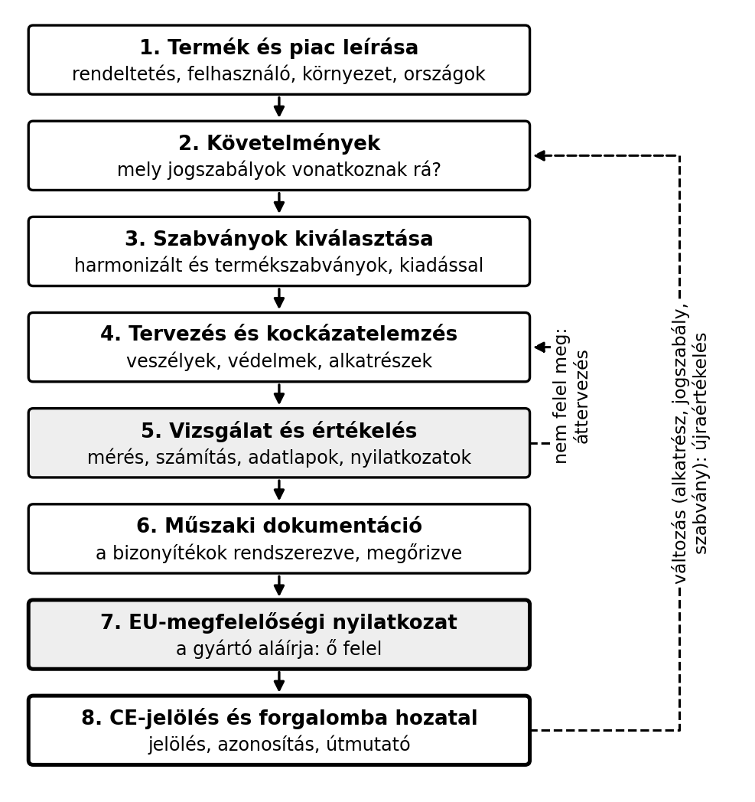
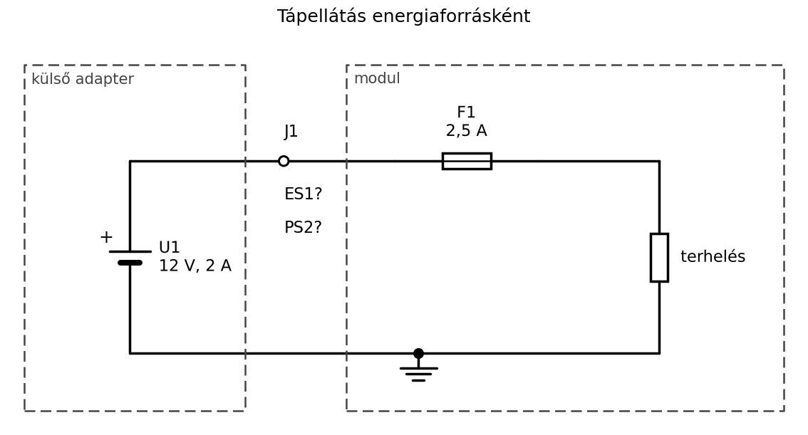

Ennek az alfejezetnek a végére:
Előfeltétel Az áram élettani hatásai és a törpefeszültség, a Váltakozó áramú hálózatszámítás és teljesítmény és a Szigetelési távolság és kúszóút.
Fontos. Ez a fejezet fogalmi tájékoztatás, nem jogi tanácsadás. Minden jogszabályi követelményt és számértéket a hatályos szövegből, szükség esetén szakértővel ellenőrizz; ezt jelöli az „ellenőrizendő” megjegyzés.
A szenzormodul működik, és egy cég meg akarja venni tőled ötven példányban, egy 12 V-os hálózati adapterrel együtt. Az első kérdése nem a hőmérséklet-mérés pontossága, hanem ez: „CE-jelöléssel jön?” Ráragaszthatsz egy CE-matricát? Ki felel, ha a készülék zavarja a szomszédos berendezést, vagy túlmelegszik? Mit kell papíron megőrizned?
Ezek a kérdések visszahatnak a tervezésre: más alkatrészt választasz, ha anyagnyilatkozat kell hozzá, és más védelmet rajzolsz, ha meg kell indokolnod, miért biztonságos a készülék. Aki csak a végén gondol rájuk, gyakran áttervez.
A CE-jelölés nem iskolai osztályzat, amelyet egy hivatal ad. Inkább aláírt nyilatkozat: a gyártó kijelenti, hogy a termék teljesíti a rá vonatkozó uniós harmonizációs jogszabályok követelményeit, és ezért ő felel (ellenőrizendő: 765/2008/EK rendelet és a vonatkozó irányelvek) [S-CE]. A jelölés nem mond semmit a minőségről, az élettartamról vagy a származási országról. A hasonlat korlátja: a nyilatkozat mögött nem elég a jó szándék, bizonyítékoknak kell állniuk, és a hatóság ezeket elkérheti.
Gondolkodj előre: egy 12 V-ról táplált modulra egyáltalán vonatkozik-e valamilyen uniós előírás, ha nincs benne veszélyes feszültség?

A folyamat nem a végén kezdődik. A 2. lépés követelményei a 4. lépés tervezési bemenetei; a visszacsatolás pedig azt mutatja, hogy egy alkatrészcsere vagy jogszabályváltozás után az értékelést felül kell vizsgálni.
A válasz a kérdésre: igen. A kisfeszültségű villamos biztonsági irányelv hatálya feszültséghez kötött, de más szabályok (például az elektromágneses összeférhetőség vagy az anyagkorlátozás) nem ettől függenek.
Definíció. A CE-jelölés a gyártó jelzése arról, hogy a termék megfelel a rá alkalmazandó, CE-jelölést előíró uniós harmonizációs jogszabályoknak. Csak ott tehető fel, ahol ilyen jogszabály előírja (ellenőrizendő: 765/2008/EK).
Definíció. Az EU-megfelelőségi nyilatkozat (EU declaration of conformity) a gyártó aláírt dokumentuma: azonosítja a terméket és a gyártót, felsorolja a jogszabályokat és a felhasznált szabványokat. A műszaki dokumentáció (technical documentation) mindazt tartalmazza, amivel a megfelelés igazolható: leírás, kapcsolási rajz, darabjegyzék, kockázatelemzés, számítások, vizsgálati jegyzőkönyvek, alkatrész-nyilatkozatok. Meghatározott ideig meg kell őrizni (gyakran tíz év; ellenőrizendő: a vonatkozó jogszabály).
A gazdasági szereplők a gyártó, a meghatalmazott képviselő, az importőr és a forgalmazó; kötelezettségeik eltérnek. Aki más termékét a saját neve alatt hozza forgalomba, vagy lényegesen átalakítja, rendszerint gyártónak minősül (ellenőrizendő). Sok irányelvnél a gyártó maga értékeli a megfelelőséget, más esetekben egy bejelentett szervezet (notified body, a tagállam által kijelölt vizsgálóintézet) bevonása szükséges vagy választható (ellenőrizendő).
| Rövid név | Jogszabály (ellenőrizendő a hatályos változat) | Mit véd | Mikor érintheti (ellenőrizendő) |
|---|---|---|---|
| LVD | 2014/35/EU | villamos biztonság | 50–1000 V AC, illetve 75–1500 V DC közötti névleges feszültségnél (ellenőrizendő: 2014/35/EU) |
| EMC | 2014/30/EU | elektromágneses összeférhetőség | zavart keltő vagy zavarérzékeny készüléknél |
| RED | 2014/53/EU | rádióberendezés (biztonság, EMC, spektrum) | ha rádiója van, feszültséghatártól függetlenül |
| RoHS | 2011/65/EU | veszélyes anyagok korlátozása | elektromos és elektronikus berendezésnél |
| GPSR | (EU) 2023/988 | általános termékbiztonság | fogyasztói terméknél, ahol külön szabály nem fedi le a kockázatot |
| WEEE | 2012/19/EU | hulladékkezelés | elektromos és elektronikus berendezés forgalmazásánál |
| REACH | 1907/2006/EK | vegyi anyagok | anyagokra és árucikkekre |
A felsorolás nem teljes [S-EUDIR]: a termék rendeltetése (orvosi, jármű, gép, robbanásveszélyes tér) egészen más szabályokat hozhat, és a hálózatra kapcsolt vagy adatot kezelő eszközöknél további, például kiberbiztonsági előírások is felmerülhetnek (ellenőrizendő). Kész, végfelhasználónak szánt készülék és beépítésre szánt részegység megítélése is eltérhet. Az USA-ban például más a rendszer (FCC, UL); ezzel nem foglalkozunk.
A jogszabály többnyire lényeges követelményeket mond ki („legyen biztonságos”, „ne zavarjon”), számértékeket nem. Ezeket a szabványok teszik mérhetővé.
Definíció. A harmonizált szabvány olyan európai szabvány, amelyet az Európai Bizottság felkérésére dolgoztak ki, és amelynek hivatkozását az EU Hivatalos Lapjában közzétették. Aki alkalmazza, annál az általa lefedett követelményekre megfelelőségi vélelem (presumption of conformity) áll fenn (ellenőrizendő).
A szabvány alkalmazása általában önkéntes, de ha mást választasz, neked kell bizonyítanod, hogy a követelmény teljesül. A termékszabvány egy termékcsaládra mondja meg a követelményeket (például IEC 62368-1), az alapszabvány egy módszert ír le (például az IEC 61000-4-2 az elektrosztatikus kisüléses vizsgálatot; lásd Az EMC alapjai: forrás, csatolás, vevő). A nemzetközi IEC-szöveg és a harmonizált európai változat eltérhet, ezért a kiadás számát mindig rögzítsd.
A hálózati oldalon a Váltakozó áramú hálózatszámítás és teljesítmény teljesítménytényezőjéhez kapcsolódó felharmonikus-korlátok is szerepelhetnek (ellenőrizendő: IEC 61000-3-2); törpefeszültségű modulunknál ez az adapter gyártójának feladata, a te dolgod a nyilatkozatának beszerzése.
A RoHS korlátozza egyes anyagok (ólom, higany, kadmium, hat vegyértékű króm, bizonyos brómozott égésgátlók és ftalátok) koncentrációját az úgynevezett homogén anyagban, vagyis abban, amely mechanikusan nem bontható tovább; a tipikus határ 0,1 tömegszázalék, kadmiumnál 0,01 (ellenőrizendő: 2011/65/EU II. melléklet, kivételek a mellékletekben) [S-ROHS]. A REACH többek között tájékoztatási kötelezettséget ír elő, ha egy árucikk „különös aggodalomra okot adó” (SVHC) anyagot a küszöbérték fölött tartalmaz (ellenőrizendő: 1907/2006/EK 33. cikk). A WEEE a begyűjtés és kezelés rendszere; jele az áthúzott kerekes kuka, és gyártói nyilvántartásba vétel is tartozhat hozzá (ellenőrizendő: nemzeti átültetés).
Neked a rajznál ez azt jelenti: minden darabjegyzék-sorhoz legyen gyártói anyagnyilatkozat, és a második forrás is rendelkezzen vele.
Az IEC 62368-1 nem azt kérdezi először, hogy „hogyan néz ki a készülék”, hanem hogy milyen energiaforrás van benne, hogyan juthat el az emberhez vagy az éghető anyaghoz, és mi állítja meg [S-IEC62368].
Definíció. Az energiaforrás-osztály azt fejezi ki, mekkora kárt okozhat a forrás: az 1. osztály normál és egyszeres hiba esetén sem fájdalmas és nem gyújt; a 2. fájdalmas lehet, de nem okoz sérülést; a 3. sérülést okozhat. A villamos források jele ES1–ES3, a tűz szempontjából a teljesítményforrásoké PS1–PS3 (a mechanikai, hő- és sugárzási források külön osztályt kapnak). A védelem (safeguard) a forrás és a test közé kerülő eszköz, szigetelés, burkolat vagy utasítás. A besorolás határai és feltételei: ellenőrizendő: IEC 62368-1.
Átlagos felhasználónál az egyszerűsített szabály: 1. osztályhoz nem kell védelem, 2. osztályhoz egy alapvédelem, 3. osztályhoz alap- és kiegészítő védelem, vagy egy megerősített (a fogalmak: Szigetelési távolság és kúszóút). A logika oka az egyetlen hiba elve: egy meghibásodás után sem érheti sérülést okozó energia az embert.
A teljesítményforrásnál a besorolás az elérhető teljesítményen alapul:
ahol a maximumot a forrásból kivehető feszültség–áram párokra, a szabványban előírt feltételek (hibaállapotok, mérési idő) mellett kell venni. Mértékegység: . A leggyakrabban idézett határok: PS1 legfeljebb 15 W, PS2 legfeljebb 100 W, afölött PS3 (ellenőrizendő: IEC 62368-1, a mérési idővel együtt). Ez nem a fogyasztód teljesítménye: a forrás képessége számít.

A rajzon és a dokumentációban jelenik meg a tervezési döntés: hol lép be az energia, melyik elem védelem (F1, szigetelés, burkolat), melyik alkatrésznek kell minősítés. Az adapter (külső, hálózati készülék) a saját gyártójának felelőssége, de ha a készleted része, a nyilatkozatát be kell szerezned, és ellenőrizned, hogy a saját feltételezéseidet (kimeneti feszültség, áramkorlát, szigetelés) vállalja.
Továbbvitt eredmény. A CE-jelölés a gyártó nyilatkozata; mögötte az alkalmazandó jogszabályok, a (harmonizált) szabványok, a vizsgálati és számítási bizonyítékok és a műszaki dokumentáció áll, ezért a tervezés közben dokumentálj (követelmény → döntés → bizonyíték). Erre épül Az EMC alapjai: forrás, csatolás, vevő, a Követelményektől a blokkdiagramig és a Tervezési átvizsgálás és átadás a NYÁK-tervezésnek.
Továbbvitt eredmény. Veszélyalapú szemlélet: azonosítsd az energiaforrásokat és osztályukat, az átviteli utat, majd a szükséges védelmeket úgy, hogy egyetlen hiba se juttasson sérülést okozó energiát az emberhez. Ez a Követelményektől a blokkdiagramig kockázatlistájának és a Tervezési átvizsgálás és átadás a NYÁK-tervezésnek biztonsági kérdéseinek alapja.
Feltételezés (mintaadat): tanúsított adapter, 12 V DC, áramkorlát 2 A. A kérdés fogalmi: melyik osztály jöhet szóba?
Jogszabályi átnézés (vázlat, ellenőrizendő): LVD – 12 V DC a 75 V-os alsó határ alatt, nem esik bele; EMC – valószínűleg igen; RED – nincs rádió, nem; RoHS, WEEE, REACH – igen; fogyasztói termékként az általános termékbiztonság is. Az adapterre külön, a saját gyártójánál érvényes az LVD.
Józanész-ellenőrzés: a „nincs veszélyes feszültség” csak az áramütésről szól, a tűzveszélyről nem.
A kód két segédeszköz: egy teljesítményosztály-függvény, amelynek a határait paraméterként kapja (és te ellenőrzöd), valamint a Tervezési átvizsgálás és átadás a NYÁK-tervezésnek mintadarabjegyzékének RoHS-átnézése.
from elkit import power, review
def ps_class(p_avail, ps1=15.0, ps2=100.0): # W; ellenőrizendő: IEC 62368-1
return "PS1" if p_avail <= ps1 else "PS2" if p_avail <= ps2 else "PS3"
for u, i in ((12.0, 1.0), (12.0, 2.0), (24.0, 5.0)):
print(f"{u:4.0f} V x {i:.0f} A = {u * i:5.1f} W -> {ps_class(u * i)}-jelölt")
need = power.szenzormodul_tree().solve("max")["+12V"].p_in
print(f"a modul legnagyobb bemeneti teljesítménye (mintaadat): {need:.1f} W")
for item in review.load_bom():
if item.rohs is not True:
state = "nem beültetendő (DNP)" if item.dnp else "HIÁNYZIK a RoHS-nyilatkozat"
print(f"{item.ref:3s} {item.mpn or '(nincs cikkszám)':18s} {state}") 12 V x 1 A = 12.0 W -> PS1-jelölt
12 V x 2 A = 24.0 W -> PS2-jelölt
24 V x 5 A = 120.0 W -> PS3-jelölt
a modul legnagyobb bemeneti teljesítménye (mintaadat): 15.2 W
U2 MINTA-LDO HIÁNYZIK a RoHS-nyilatkozat
R4 (nincs cikkszám) nem beültetendő (DNP)A függvény csak a határokkal való összehasonlítást végzi; a szabványos mérés, a hibaállapotok és a besorolás többi feltétele nincs benne. A BOM-lista megmutatja, hogy az LDO-hoz (U2) nyilatkozatot kell kérni.
A CE-jelölés a gyártó felelősségvállalása, hogy a termék megfelel a rá vonatkozó uniós jogszabályoknak; nem minőségjel. Egy törpefeszültségű terméket is érinthet az EMC-, a RoHS-, a WEEE- és a REACH-szabályozás, rádiónál a RED, fogyasztói terméknél az általános termékbiztonság (alkalmazhatóság ellenőrizendő). A harmonizált szabvány megfelelőségi vélelmet ad, a műszaki dokumentáció a bizonyíték, a megfelelőségi nyilatkozat az aláírt állítás. Az IEC 62368-1 veszélyalapú logikája: energiaforrás (ES, PS osztály) → átvitel → testrész, közé védelmek; a 3. osztályhoz két szint vagy megerősített védelem kell, hogy egyetlen hiba se okozzon sérülést. A biztosíték nem teljesítménykorlátozó. A konkrét határok és jogi feltételek mindig a hatályos szövegből ellenőrizendők.
W → PS1-jelölt; W → PS3-jelölt.
Elsősorban a RED sor lép be (biztonság, EMC, rádióspektrum), újra kell nézni az EMC-t, az antenna környezetét és az anyagnyilatkozatokat. A modulgyártótól megfelelőségi nyilatkozatot, vizsgálati jegyzőkönyvet és a beépítési feltételeket kérd; a végterméket ettől még értékelned kell (ellenőrizendő).
Források: villamos (48 V, osztályozás ellenőrizendő; DC-ben az idézett ES1 határ alatt lehet (ellenőrizendő: IEC 62368-1), de a hibaállapotok számítanak) és teljesítmény (150 W, PS3-jelölt: tűz, ívelés). Átvitel: fém szerszám rövidre zárja a sínt, érintés. Védelmek: szerszámmal nyitható burkolat a sín fölött, elektronikus áramkorlát vagy biztosíték, szervizutasítás és tájékoztatás. Ellenőrizendő: az ES- és PS-határok, a szakképzett személyre vonatkozó szabályok.
Minta: Követelmény: zárlat esetén a bemeneti vezetékezés ne melegedjen túl. Döntés: F1, 2,5 A névleges áram, 32 V feszültség (mintaadat). Bizonyíték: tartós bemeneti áram legfeljebb 1,27 A (tápfa), azaz kb. 51% kihasználás; I²t-összevetés a Tápbemeneti védelmek: biztosíték, polaritás, túlfeszültség, áramlökés szerint. Nyitott: az adapter 2 A-es korlátja mellett a biztosíték kiold-e zárlatkor (nem biztos!), ezt az adapter adatlapjával és méréssel kell eldönteni.
Megoldás:
reqs = [("K1", "bemeneti tartomány 9–16 V", "számítás S1"),
("K2", "tűzvédelem: bemeneti hibaáram", ""),
("K3", "anyagnyilatkozat minden alkatrészre", ""),
("K4", "EMC-előmérés", "jegyzőkönyv M2"),
("K5", "ESD a csatlakozón", "")]
missing = [(i, t) for i, t, e in reqs if not e]
for ident, text in missing:
print(f"hiányzó bizonyíték: {ident} – {text}")
print(f"lefedettség: {1 - len(missing) / len(reqs):.0%}")hiányzó bizonyíték: K2 – tűzvédelem: bemeneti hibaáram
hiányzó bizonyíték: K3 – anyagnyilatkozat minden alkatrészre
hiányzó bizonyíték: K5 – ESD a csatlakozón
lefedettség: 40%A lefedettség csak azt méri, hogy van-e hivatkozott bizonyíték, azt nem, hogy elég jó-e: ezt az átvizsgálás dönti el.